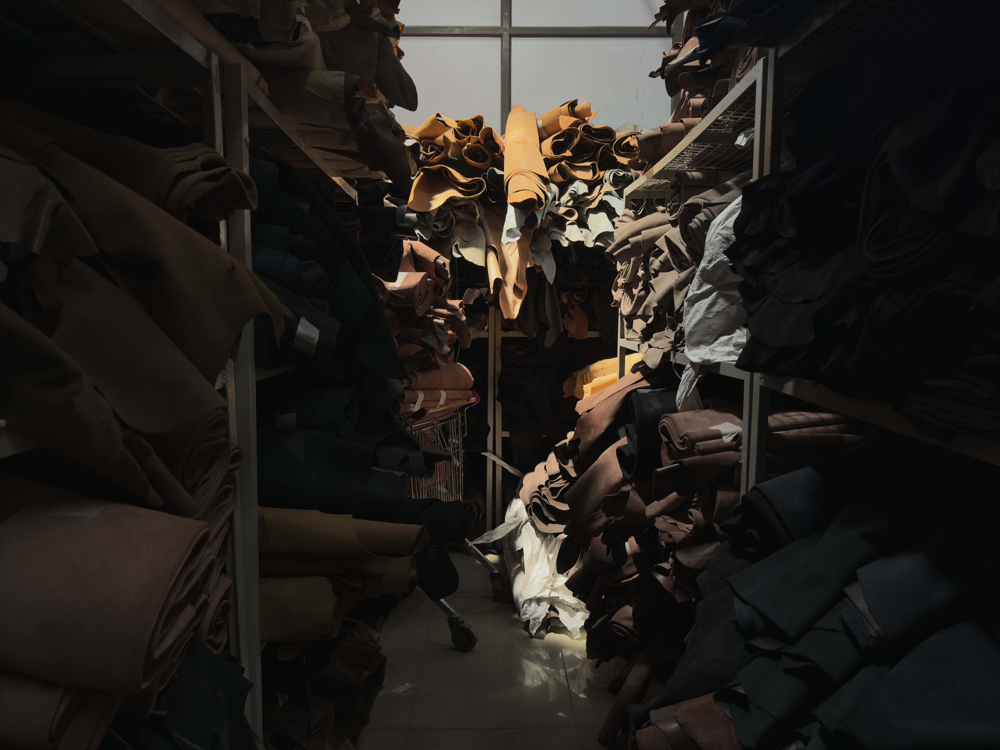

Almacén — Curtidos vegetales y al cromo
_ARCHIVE
El Archivo de la Piel
Un almacén de pieles no es un almacén. Es una biblioteca. Cada rollo tiene una historia que empieza en una curtidería y termina —o debería terminar— en un objeto que dure décadas. La diferencia entre el cuero que envejece bien y el que se deteriora no está en la marca. Está en cómo fue tratado antes de convertirse en material.